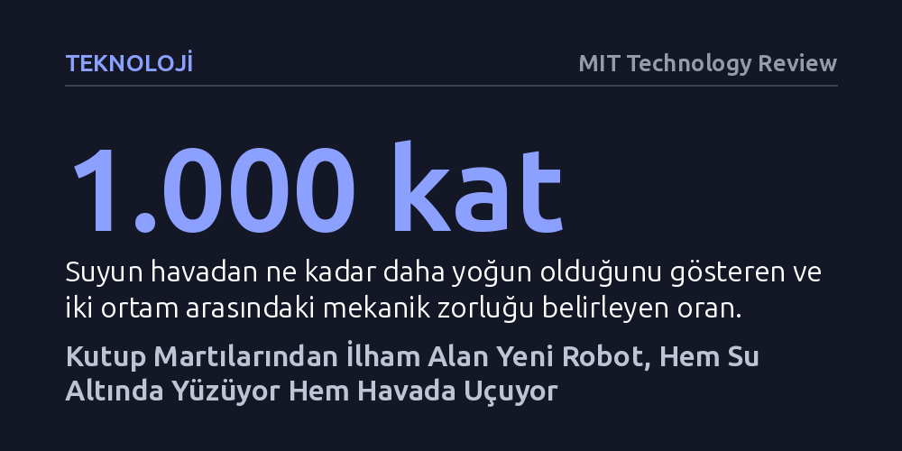

TEKNOLOJI · MIT Technology Review · 2026-10-21
Mühendisler, kutup martılarının hareket mekaniğini taklit ederek hem su altında yüzebilen hem de doğrudan havalanıp uçabilen 300 gramlık bir robot geliştirdi. Esnek kanat ve dik gövde açısı, su ile hava arasındaki yoğunluk farkını aşarak geçişi mümkün kılıyor.
Hava ve su gibi zıt yoğunluktaki iki ortamda tek bir kanat mekanizmasıyla hareket etmenin mümkün olduğunu göstererek, ulaşılamayan sulak alanların hem havadan hem su altından incelenmesini sağlayacak hibrit dronların önünü açıyor.

Su ile havanın fiziksel özellikleri arasındaki muazzam fark, uzun süredir mühendislik tasarımının en temel sınırlarından biri kabul ediliyordu. Suyun havadan yaklaşık bin kat daha yoğun olması, her iki akışkan için tamamen zıt itki ve kaldırma mekanizmaları gerektiriyor. Buna karşılık doğada kutup martıları ve deniz papağanları gibi canlılar, hiçbir mekanik değişim yaşamadan önce denize dalıp su altında yüzebiliyor, ardından tek bir sıçramayla gökyüzüne dönüp uçabiliyor. Massachusetts Teknoloji Enstitüsü (MIT) ve İsviçre Federal Teknoloji Enstitüsü'nden (EPFL) araştırmacılar, biyolojideki bu geçiş kabiliyetini yapay bir sisteme aktarmayı başardı.
Geliştirilen ve "çırpan kanatlı hava-deniz aracı" (FAAV) adı verilen robot, 300 gramın altındaki hafifliğiyle dikkat çekiyor. Aracın gövdesinde su geçirmez bir elektrik motoru, hafif bir batarya ve kanatları önceden belirlenen frekanslarda hareket ettiren bir krank mili bulunuyor. Robotun kanatları, sudan çıkış anında su tutmasını engellemek amacıyla hidrofobik nanoparçacıklarla kaplanmış ince zarlardan üretildi. Yönlendirilebilir motorlu kuyruk ise robotun suyun dibine dalış yaparken ya da yüzeyden havalanırken açısını anlık olarak ayarlamasını sağlıyor.
MIT Makine Mühendisliği Bölümü'nden Raphael Zufferey liderliğindeki araştırma ekibi, robotun hem su tanklarında hem de Cenevre Gölü'nün doğal koşullarında yüzlerce denemesini gerçekleştirdi. Mühendislerin temel amacı, robotun suyun yoğun direncinden kurtulup havaya pürüzsüzce geçiş yapabilmesi için gereken en uygun kanat boyutu, çırpma frekansı ve kuyruk açısı bileşimini tespit etmekti.
Yapılan testler sonucunda en verimli performans, orta boyuttaki esnek kanatlarla elde edildi. Bu kanatlar, su altındayken akışkanın oluşturduğu yoğun direnç karşısında esneyerek çırpma açıklığını daraltıyor; havaya ulaşıldığında ise robotu gökyüzünde tutacak rijitliğe kavuşuyor. Gerçek kuşların kanat çırpma frekanslarına yakın hızlarda çalışan robot, 70 derecelik dik bir hücum açısı yakaladığında sudan havaya sıçrayarak doğrudan uçuşa geçebiliyor. Üstelik birçok dalgıç kuşun sudan havalanırken ayaklarıyla su yüzeyini itmesine rağmen, geliştirilen robotun hiçbir ayak mekanizmasına ihtiyaç duymadan yalnızca kanatlarıyla bu kalkışı başarması araştırmanın en çarpıcı bulguları arasında yer alıyor.
Bu hibrit tasarım, geleneksel deniz araçlarının, gemilerin veya standart insansız hava araçlarının yanaşamadığı tehlikeli ve erişilmez sulak bölgelerin incelenmesinde yepyeni bir dron sınıfının kapısını aralıyor. Hem havadan hızla hedef bölgeye uçabilen hem de yüzeye inip su altından numune toplayabilen bu araçlar, çevre kirliliği takibinden ekosistem analizine kadar pek çok alanda araştırmacılara benzersiz bir esneklik sunma potansiyeli taşıyor.
Mühendisler şimdilerde robotun yeteneklerini bir adım öteye taşımak için yalnızca aşağı yukarı çırpan değil, aynı zamanda bükülüp dönebilen yeni kanat tasarımları üzerinde çalışıyor. Aracın dalgalı sularda ve sert rüzgarlarda nasıl tepki vereceğini anlamak adına türbülans testlerine başlanması planlanıyor. Nihai hedef, bu biyo-ilhamlı robotu açık denizlerde ve zorlu oşinografik saha araştırmalarında aktif bir bilimsel gözlemci olarak kullanmak.